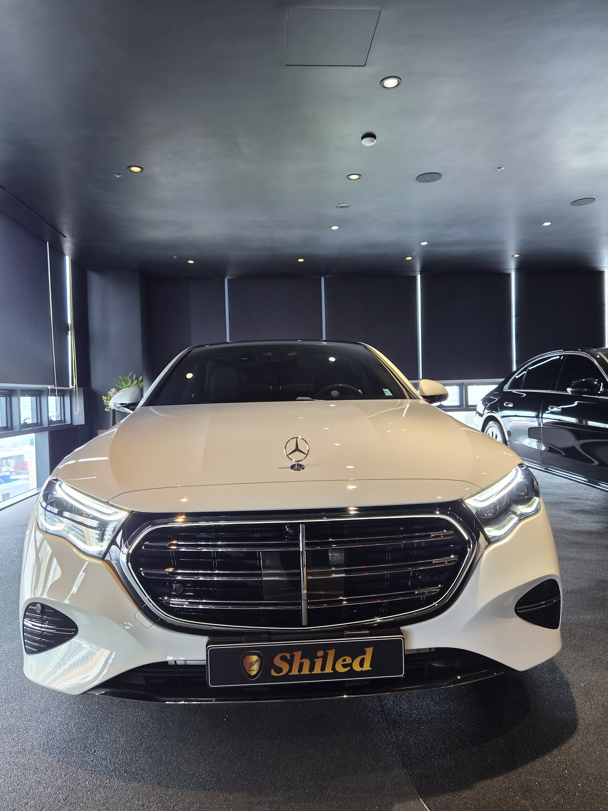
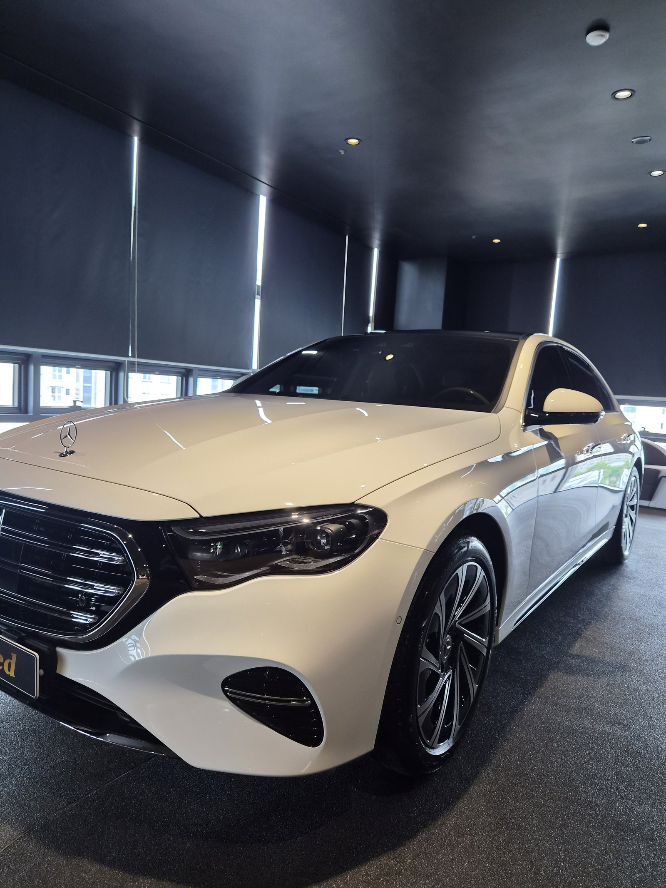
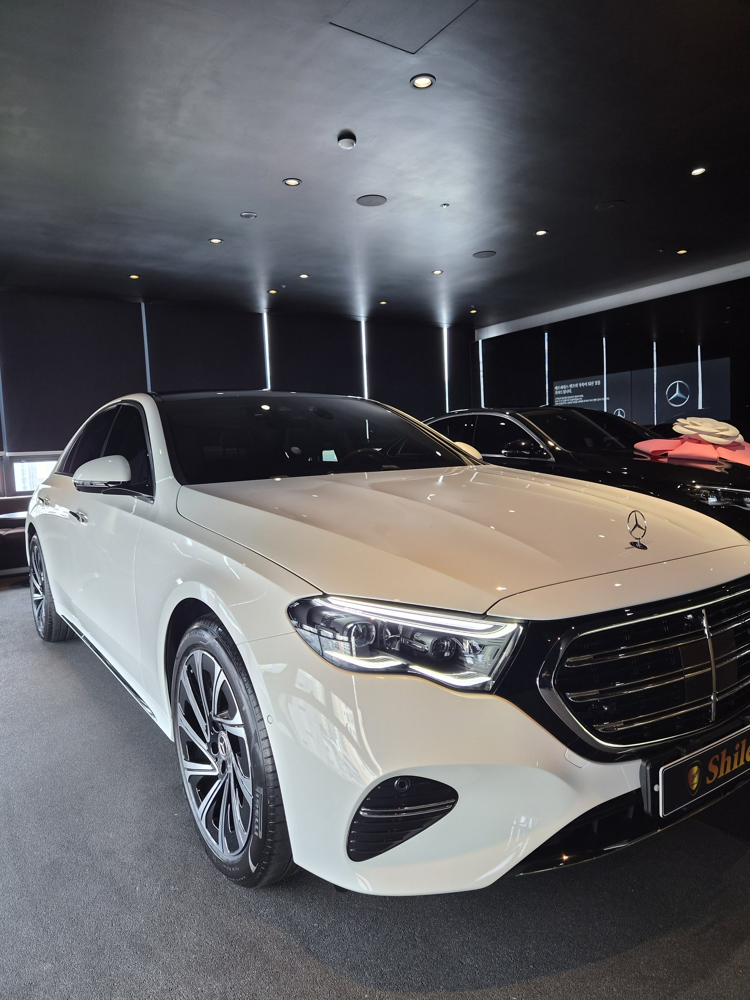
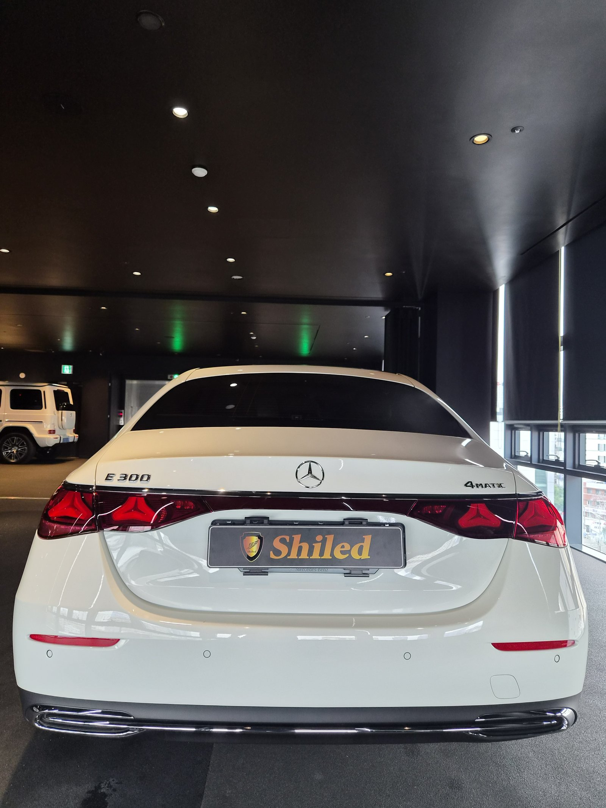
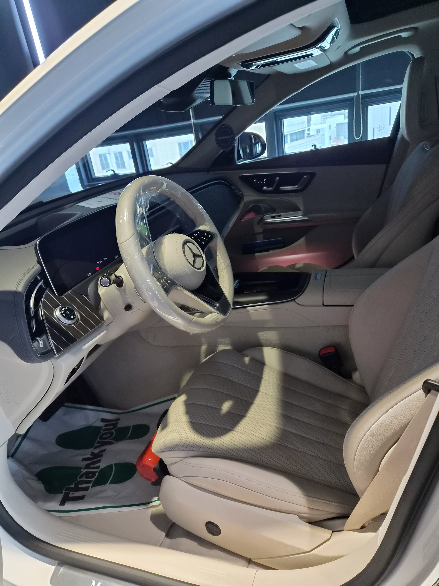
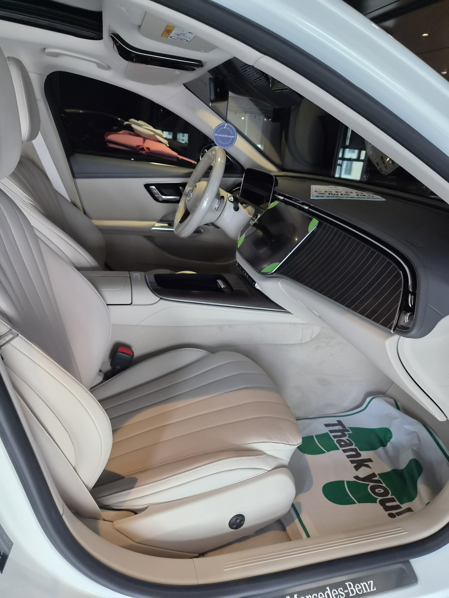
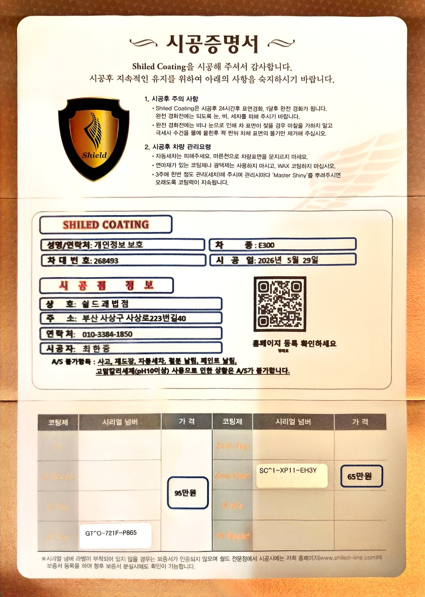

벤츠 E300 백색입니다. 아직 출고 전, 새 차입니다.
이번 부산 유리막코팅 작업은 G-TOP 유리막코팅 + 시트코팅으로 진행했습니다.

백색 신차, 왜 유리막코팅이 필요한가
흰색은 잔기스가 안 보일 뿐 없는 게 아닙니다.
오염과 물자국도 백색에서는 은근히 잘 드러납니다. 그래서 출고 전, 도장면이 가장 깨끗한 신차 상태일 때 코팅막을 입혀둡니다. 이 차는 부산 유리막코팅 중에서도 G-TOP으로 방향을 잡았습니다.

G-TOP, 발수·방오성에 특화된 코팅
G-TOP은 발수·방오성을 끌어올리는 데 특화된 코팅입니다.
백색차는 오염이 표면에 눌어붙기 시작하면 유독 눈에 잘 띕니다. G-TOP을 올리면 물과 오염이 표면에 쉽게 붙지 못하고 흘러내려, 세차 후 관리가 한결 편해집니다. 코팅제는 대표가 화학공학 전공으로 직접 개발·제조한 제품입니다.

기술자의 팁
완전경화 전에는 자동세차와 왁스 코팅을 피해주세요. 완전경화 후에도 3주에 한 번 정도 관리세차를 해주시고, 그때마다 마스터샤이니를 도포해주시면 G-TOP의 발수·방오력이 더 오래 유지됩니다.

외부만이 아니라 안까지 — 시트코팅
외장만으로 끝내지 않았습니다.
가죽시트는 오염과 자외선에 그대로 노출되면 갈라지고 색이 바랩니다. 신차 상태일 때 시트코팅까지 함께 올려두면 오염 침투를 막고, 가죽의 촉감과 컨디션을 더 오래 지킬 수 있습니다. 아이가 있거나 음료를 자주 흘리는 가정이라면 특히 체감이 큰 시공입니다.


시공증명서를 함께 드립니다
모든 시공 차량에 시공증명서를 드립니다.
차종·시공일·코팅제 시리얼 번호가 적혀 있고, 홈페이지에 등록해 보증을 받으실 수 있습니다. 이 차는 G-TOP과 시트코팅 두 가지 시리얼로 기록돼 있습니다.

차종·시공일·코팅제 시리얼이 기재된 시공증명서
자주 묻는 질문
Q. 백색 신차에는 왜 G-TOP 코팅이 좋은가요?
A. 백색은 오염과 물자국이 은근히 잘 드러나는 색상입니다. G-TOP은 발수·방오성에 특화된 코팅으로, 표면에 물과 오염이 붙는 것 자체를 줄여줍니다. 세차 주기와 관리 부담을 줄이고 싶은 백색 신차에 잘 맞는 선택입니다.
Q. 시트코팅은 왜 필요한가요?
A. 가죽시트는 오염과 자외선에 그대로 노출되면 갈라지고 색이 바랩니다. 신차 상태일 때 시트코팅을 올려두면 오염 침투를 막고 가죽의 촉감과 컨디션을 더 오래 지킬 수 있습니다.
Q. 벤츠 신차, 출고 전과 후 중 언제 코팅해야 하나요?
A. 출고 전입니다. 도장면이 가장 깨끗할 때 코팅을 올려야 오염과 잔기스를 원천적으로 차단할 수 있습니다. 운행이 시작되면 미세한 오염과 스크래치가 쌓이기 시작하기 때문에, 신차 상태 그대로일 때 코팅해두는 걸 권해드립니다.
Q. 코팅 후 세차는 언제부터 하나요?
A. 표면경화까지 24시간, 완전경화까지 1달 정도 걸립니다. 완전경화 전에는 눈·비·자동세차를 피해주시고, 부득이하게 물기가 묻으면 마찰 없이 극세사 수건으로 물기만 제거해주세요.
Q. 쉴드광택 위치와 예약은 어떻게 하나요?
A. 부산 남구 유엔로220 1F 쉴드광택입니다. 예약·상담은 010-3384-1850, 대표 최한중이 직접 상담하고 책임 시공합니다.
새 차일수록 시작점이 다릅니다. 외장과 실내, 함께 지켜두십시오.
제품을 직접 만드는 사람이 직접 시공합니다.
유리막코팅을 고민 중이시면 편하게 연락 주십시오.
어떤 차를 타냐보다 어떻게 타냐가 중요합니다~!
시공 중에는 전화를 받지 못할 때가 많습니다.
카카오톡으로 차종과 원하시는 시공을 남겨주시면 확인 후 답변드립니다.
쉴드광택 · 부산 남구 유엔로220 1F · 대표 최한중